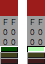
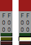
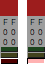

色補助属性
色補助属性とは次の３つを指します。
| マスク（上塗りを禁止） | 他の色によって上塗りすることを禁止します。 |
|---|---|
| 非使用（吸い取りを禁止） | 描画時に使用しません。 濃度が関係して色混合を行い、機械的に色選別する際の対象（塗装色の候補）からも除外します。 |
| 透明 | 表示しない色となり背面のレイヤーが見えるようにします。 透明度の段階は透明・非透明の２段階です。 |
色補助属性の編集
| マスク |  | マスク（上塗り禁止）を切り替えます。 暗い緑（）はマスク無効を示します。 明るい緑（）はマスク有効を示します。 |
|---|---|---|
| 非使用 |  | 非使用（吸い取り禁止）を切り替えます。 暗い黄（）は使用可を示します。 明るい黄（）は使用不可を示します。 |
| 透明 |  | 透明を切り替えます。 暗い赤（）は不透明を示します。 明るい赤（）は透明を示します。 |